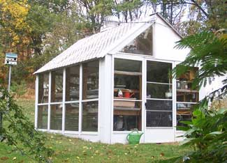
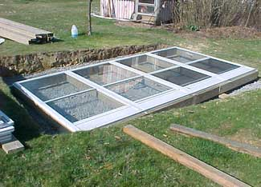

Early that autumn morning, I knew it was going to be a great day: I dropped my toast, and it landed honey-side up! Then in the morning newspaper, I saw an announcement for a public auction of “dozens of used aluminum storm doors.” I could hardly wait to hitch up my trailer.
My bid was $4 when the auctioneer said, “Sold! How many do you want?”
“All of them,” I said. I went home with 25 used double-track aluminum storm doors with screens and tempered glass.
I always wanted a home garden greenhouse to start my own vegetable plants (and a warm place to putter as the snow swirled outside). When I announced my new project at our Sunday family supper, my son smiled as he said, “I thought you were running low on things to do.” The next day he was helping me unload stones for the greenhouse base.
We made the greenhouse frame from 2-by-6s. The studs and rafters are on 36-inch centers to accommodate the 36-inch storm doors. Top and bottom plates are double 2-by-6s with overlapping corners. The frame is held together by three-eighths-inch bolts and galvanized spiral nails. The north side has no glass exposure. It is sheathed with oriented strand board and covered with vinyl siding. It shelters the greenhouse from cold winter winds. That sheltered side also makes working in the greenhouse bearable on hot summer days. The worktable is in the shade.
The greenhouse is heated by hot water piped in via underground lines coming from a woodstove outside my shop. I modified the stove by laying a cast-iron radiator on top of it. The water in the radiator is drawn to the greenhouse radiator by a small circulating pump. The pump runs constantly in cold months. The greenhouse thermostat controls the blower on the remote woodstove so it maintains a water temperature of about 120 degrees Fahrenheit. I think this is more efficient than having the water temperature fluctuate widely. I know it provides a more even temperature in the greenhouse, which ranges from 70 to 80 degrees on cloudy days.
If you love gardening and potting plants, build a greenhouse! Don’t expect it to pay for itself unless you value the excitement of seeing a seed sprout, you get a special satisfaction from eating your own harvest, and enjoy the flavors that have been lost in the quest for commercial produce that stays hard as wood in shipping (and also resembles wood in flavor).
Remember; your first greenhouse can be anything from a recycled flea-market fish aquarium to a heated walk-in model. Whatever style you choose, you will surely enjoy it.
For information on using a greenhouse, read Expert Advice for Greenhouse Growing.
Have you built your own greenhouse? Share your experience in the comment section below.|
 NEVIN HAWLMAN This greenhouse is made from reused aluminum storm doors. |
 NEVIN HAWLMAN The south wall of the greenhouse is made of 2-by-6s and four storm doors. |
|